张建葵 2017/8/22 14:52:21
That's a good quetion.
这都是在校内网里收集的。其细节将会如下表述：
总的来说，我们数据库里已经有了你的学号和名字。如果你嫌新建账户又要想密码太麻烦了，也可以用一个很简单的密码因为这里的用户并没有什么价值。不用担心你的隐私哦。
在教务管理那里收集的。
当然了，现在没能力访问教务管理的数据。所以这里是在教务管理网站上对外公开的表格里一个一个收集的，具体过程如下：
在教务管理的学生信息那里有一个入口叫在校生某专业学生名单，如下图：
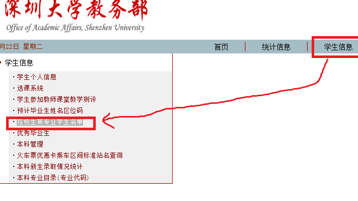
进入后可以看到：
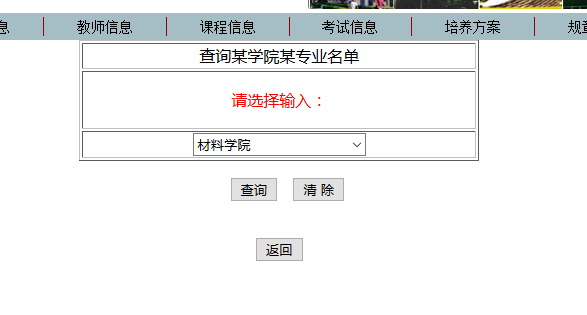
and thenhttp://192.168.2.20/axsxx/xy1.asp:
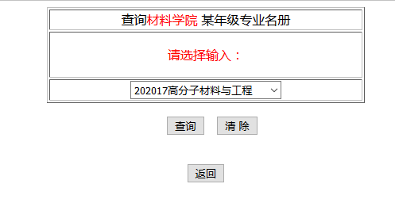
thenhttp://192.168.2.20/axsxx/xy2.asp:
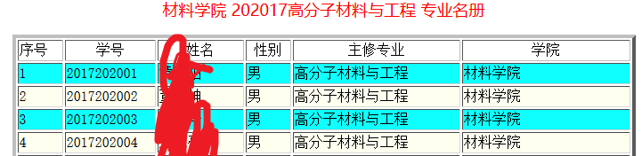
你们的信息就在这里啦。
当然不会去手动复制粘贴这辈子都不可能复制粘贴的，太多了而且毫无技术含量。所以只好写个小爬虫来自动地复制粘贴。小爬虫的目标是进入到上图的表格页面然后把上面的名单复制下来，所以下面将介绍如何进入到这个表格页面：
如下图可以看到表格页面的地址是：http://192.168.2.20/axsxx/xy2.asp:
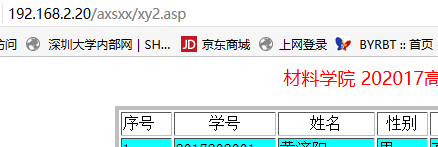
但是复制该网页进入会：
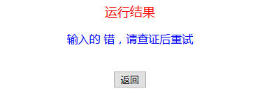
原因是这个页面需要提交表单数据。
这个表单数据可以在这个表格网页的上一级网页http://192.168.2.20/axsxx/xy1.asp看到:
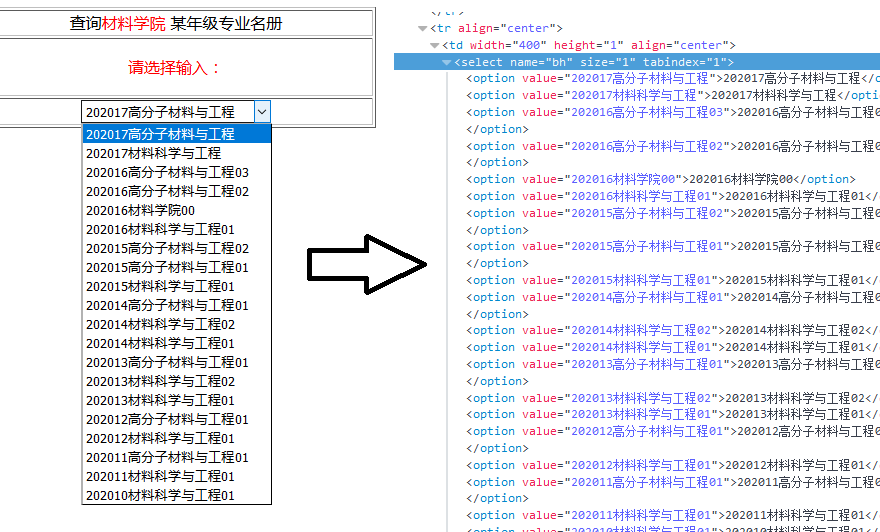
如上图，下拉框的每一项对应一个value，这个value就是需要向http://192.168.2.20/axsxx/xy2.asp提交的表单数据了，其实表单数据除了这个value还有一个submit，如下图：
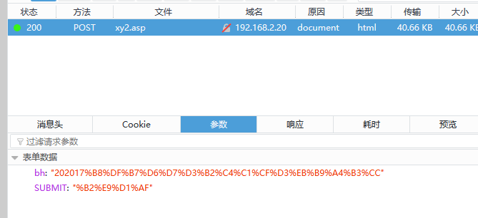
上图可以看到，表单数据有两项：
bh："202017%B8%DF%B7%D6%D7%D3%B2%C4%C1%CF%D3%EB%B9%A4%B3%CC"
SUBMIT:"%B2%E9%D1%AF"
其中bh的值就是上上图中value的值，不是中文吗怎么变成一堆%号了？这是因为中文表单需要编码了才提交的。
而SUBMIT的值%B2%E9%D1%AF其实就是中文提交。
所以这里就可以通过遍历http://192.168.2.20/axsxx/xy1.asp上的代码，对于每个value都生成一个表单值：
bh：
value的值
SUBMIT:提交
然后以POST的方式访问http://192.168.2.20/axsxx/xy2.asp，（同时还需要设置好cookie），这样就可以正确的向它提交表单，然后给你返回一个对应的表格页面。
然后问题就是怎么进入http://192.168.2.20/axsxx/xy1.asp了。
如果直接从浏览器上访问http://192.168.2.20/axsxx/xy1.asp，会这样：
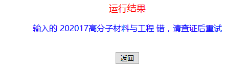
原因跟http://192.168.2.20/axsxx/xy2.asp的一样哦，显示的202017高分子材料与工程其实是上文同应该向http://192.168.2.20/axsxx/xy2.asp提交的表单value，浏览器会保留当前的表单信息直到被修改，下面将介绍如何发现、设置访问http://192.168.2.20/axsxx/xy1.asp的表单：
其实http://192.168.2.20/axsxx/xy1.asp的上一级页面是http://192.168.2.20/axsxx/xy.asp，不告诉你是怎么发现的。
同上文的很相似，http://192.168.2.20/axsxx/xy.asp的代码精华如下图：
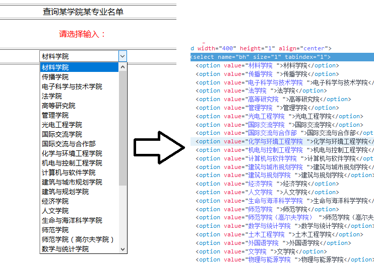
这个其实是和上文一样的，我都不想再讲了。
同样的方法找到表单的值并设置表单然后正确访问http://192.168.2.20/axsxx/xy1.asp了。
其结构就是如下：
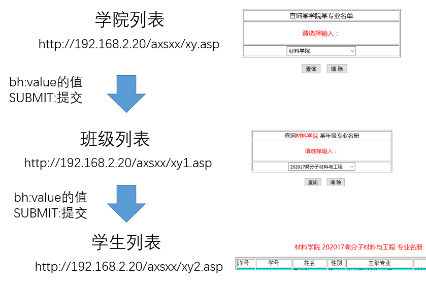
value的值并由此向班级列表提交表单，由此获得每个学院的班级；
value的值并由此向学生列表提交表单，由此获得每个班级的学生列表；
用Java实现的。不给你看。